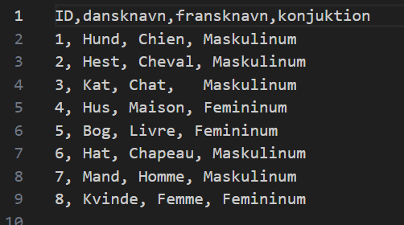

Prøv programmet her
Fransk quizProblem
Vi skal udvikle en prototype på et quiz eller flashcard hjemmeside. Vi skal udvikle vores projekt ved at kombinere databaser med hjemmesideprogrammering.
Hvordan løser vi problemet
- Vores program laver flashcards med et billede og et dansk navn på et substantiv
- Brugeren ser om de kan huske det franske navn og køn, og trykker dernæst på SVAR for at se om de har ret
- Hvis de har ret trykker de på FORSTÅET, og trykker på NY når de vil have et nyt flashcard
Her ses et uddrag fra midten af programmet, med et flashcard visende en kat

Fremvisning af databasen
Fremvisning af kode

- functionen "nyt()" anvendes
- x bliver sadt til at få værdien af et tilfældigt tal mellem 1 og 8
- x bliver gemt
- Hvis x er inden for listen af ord man har markeret med forstået gør følgende:
- genstart functionen "nyt()"
Eventuelle forbedringer
Have et sted på programmet hvor der står hvilke ord er forstået, flottere design, eventuel "completed" skærm når man har forstået alle ordene